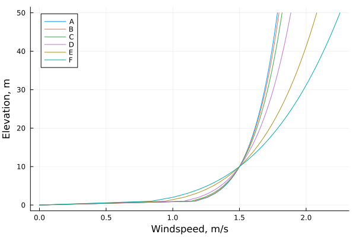

Release Scenarios
GasDispersion.jl is centered around modeling the effects of chemical release scenarios, as such the core data structure is the Scenario. A Scenario is a container for all of the information that a model may need to produce a solution. The intention is for the Scenario to be re-usable, so that the user may run the same scenario with multiple models and have an "apples to apples" comparison of the performance of those models.
A scenario is composed of three basic parts:
- a
Substance– the chemical substance being released - a
Release– the actual event taking place, such as a jet of liquid or emissions from a stack - an
Atmosphere– the environment into which the substance is being released
Substances
GasDispersion.Substance — TypeSubstance{N,VAP,D_G,D_L,F,H,CP_G,CP_L}(;kwargs...)A simple container for the physical and thermal properties of substances.
vapor_pressure, latent_heat, gas_heat_capacity, and liquid_heat_capacity can be functions of temperature (in Kelvin) or constants.
gas_density and liquid_density can be functions of temperature (in Kelvin) and pressure (in Pascal) or constants.
Arguments
name<:Union{AbstractString,Symbol}: the name of the substancemolar_weight::Number: the molar weight, kg/molvapor_pressure<:Union{Number,Function,Nothing}=nothing: the vapor pressure, Pa. Ifnothingthen the Clausius-Clapeyron equation is used to derive a vapor pressure curvegas_density<:Union{Number,Function,Nothing}=nothing: the gas density, kg/m³. Ifnothingthe ideal gas law is used.liquid_density<:Union{Number,Function}: the liquid density, kg/m³.reference_temp::Number=288.15: the reference temperature for the given properties, K.reference_pressure::Number=101325: the reference pressure for the given properties, Pa.k::Number=1.4: the isentropic expansion factor, cp/cv, unitless.boiling_temp<:Union{Number,Function}::Number: the normal boiling temperature, K.latent_heat<:Union{Number,Function}: the latent heat of vaporization, J/kg.gas_heat_capacity<:Union{Number,Function}: the gas heat capacity, J/kg/K.liquid_heat_capacity<:Union{Number,Function}: the liquid heat capacity, J/kg/K.
A substance is defined using the Substance type, this is a container for the physical properties of the substance. The container is not, by default, unit-aware and assumes that all properties are in the SI base units, e.g. temperatures are in Kelvin, pressures in Pascal, etc.
As an example, here is a minimal implementation of propane:
using GasDispersion
s = Substance(name="propane",
molar_weight=0.044096, # kg/mol
liquid_density=526.13, # kg/m³
boiling_temp=231.02, # K
latent_heat=425740, # J/kg
gas_heat_capacity=1678, # J/kg/K
liquid_heat_capacity=2520) # J/kg/K
# output
Substance: propane
MW: 0.044096 kg/mol
P_v: GasDispersion.Antoine{Float64}(9.773719865868816, 2257.9247634130143, 0.0) Pa
ρ_g: 1.864931992847327 kg/m^3
ρ_l: 526.13 kg/m^3
T_ref: 288.15 K
P_ref: 101325.0 Pa
k: 1.4
T_b: 231.02 K
Δh_v: 425740 J/kg
Cp_g: 1678 J/kg/K
Cp_l: 2520 J/kg/K
Note that the Substance has filled in some missing details. In particular it has calculateed the gas density ρ_g` at the reference point using the ideal gas law and has used the Clausius-Clapeyron equation to derive a vapour pressure curve from the latent heat and the boiling temperature. It has also used a default value of 1.4 for isentropic expansion factor
A package extension exists for Clapeyron.jl that eliminates much of the hassle of creating Substances. This requires julia >1.9 (it depends on the package extension feature) but allows one to create a Substance directly from a Clapeyron EOSModel object. For example, using the reference equation of state PropaneRef() from Clapeyron:
using GasDispersion, Clapeyron
s = Substance(PropaneRef())
# output
GasDispersionClapeyronExt.ClapeyronSubstance: propane
MW: 0.044095619999999995 kg/mol
T_ref: 288.15 K
P_ref: 101325.0 Pa
k: 1.1416338312956256
T_b: 231.03621464431782 KThe other properties, such as vapor pressure and latent heat, are calculated on demand using the relevant routines from Clapeyron.
In general several of the physical properties are functions of temperature and/or pressure, and they can be given as such. Since substances are re-usable, once defined they can be reused with many different scenarios, it may be worthwhile to find appropriate correlations for all of the physical and thermal properties of a substance. That said, it is not necessary.
Vapor Pressure
The vapor_pressure can be given as a constant, a function of temperature, or omitted entirely and the Clausius-Clapeyron equation will be used to derive a vapour pressure curve automatically.
Densities
The liquid_density and gas_density can be either constants, in which case the liquid density is assumed to be always constant and the gas density scaled using the ideal gas law (assuming the given gas density is at the reference temperature and pressure). Or they can be given as a function of temperature and pressure.
If the gas_density is omitted then the ideal gas law will be used by default.
Thermal Properties
The latent_heat, the gas_heat_capacity, and the liquid_heat_capacity can either be constants or be given as functions of temperature.
Suppose we want a more complete model of propane, using some physical property correlations for the vapor pressure, liquid density, latent heat, and heat capacities (but still assuming an ideal gas).
using GasDispersion
# vapor pressure curve, Perry's 8th edition
function Pv(T)
C1 = 59.078
C2 = -3_492.6
C3 = -6.0669
C4 = 1.0919e-5
C5 = 2
lnP = C1 + C2/T + C3*log(T) + C4*T^C5
return exp(lnP)
end
# liquid density curve, Perry's 8th edition
function ρl(T,P)
MW = 0.044096
C1 = 1.3757
C2 = 0.27453
C3 = 369.83
C4 = 0.29359
ρl = C1/( C2^(1 + (1 - T/C3)^C4) )
return ρl*MW*1000
end
# latent heat curve, Perry's 8th edition
function LH(T)
MW = 0.044096
Tc = 369.83
C1 = 2.9209e7
C2 = 0.78237
C3 = -0.77319
C4 = 0.39246
C5 = 0
Tr = T/Tc
ΔHv = C1*(1-Tr)^(C2 + C3*Tr + C4*Tr^2 + C5*Tr^3)
return ΔHv/(MW*1000)
end
# gas heat capacity, Perry's 8th edition
function cpg(T)
MW = 0.044096
C1 = 0.5192e5
C2 = 1.9245e5
C3 = 1.6265e3
C4 = 1.168e5
C5 = 723.6
Cp = C1 + C2*((C3/T)/sinh(C3/T))^2 + C4*((C5/T)/cosh(C5/T))^2
return Cp/(MW*1000)
end
# liquid heat capacity, Perry's 8th edition
function cpl(T)
MW = 0.044096
Tc = 369.83
C1 = 62.983
C2 = 113_630
C3 = 633.21
C4 = -873.46
Tr = T/Tc
t = 1-Tr
Cp = C1^2/t + C2 - 2*C1*C3*t - C1*C4*t^2 - C3^2*t^3/3 - C3*C4*t^4/2 - C4^2*t^5/5
return Cp/(MW*1000)
end
s = Substance(name="propane",
molar_weight=0.044096, # kg/mol
vapor_pressure=Pv,
liquid_density=ρl,
k=1.142,
boiling_temp=231.02, # K
latent_heat=LH,
gas_heat_capacity=cpg,
liquid_heat_capacity=cpl)
# output
Substance: propane
MW: 0.044096 kg/mol
P_v: Pv Pa
ρ_g: 1.864931992847327 kg/m^3
ρ_l: ρl kg/m^3
T_ref: 288.15 K
P_ref: 101325.0 Pa
k: 1.142
T_b: 231.02 K
Δh_v: LH J/kg
Cp_g: cpg J/kg/K
Cp_l: cpl J/kg/KReleases
A release is defined using one of the release types, this is a container for the specific event being modeled. For example a horizontal jet of liquid is a type of release. It is independent of the specific substance and of the environment into which it is being released.
Horizontal Jets
GasDispersion.HorizontalJet — TypeHorizontalJet{<:Number}(;kwargs...)<:ReleaseA simple container for parameters of a horizontal jet release.
Arguments
mass_rate::Number: the mass emission rate of the substance, kg/s.duration::Number: the duration of the release, s.diameter::Number: the diameter of the jet, m.velocity::Number: the average velocity of the jet, m/s.height::Number: the height of the jet center, m.pressure::Number: the pressure at the jet exit, Pa.temperature::Number: the temperature at the jet exit, K.fraction_liquid::Number: the fraction of the release that is liquid (for gas liquid mixtures), vol fraction.
A horizontal jet is a jet of fluid, generally assumed to be perfectly horizontal, with a constant mass emission rate over a fixed duration.
For example, suppose the release scenario is a horizontal liquid jet of propane, at the boiling point of propane, being emitted from a 10mm hole situated 1m above the ground. The release could look something like this:
using GasDispersion
r = HorizontalJet(mass_rate=0.246, # kg/s
duration=10, # s
diameter=0.01, # m
velocity=5.41, # m/s
height=1, # m
pressure=101325, # Pa
temperature=233.19, # K
fraction_liquid=1.0)
# output
HorizontalJet release:
ṁ: 0.246 kg/s
Δt: 10.0 s
d: 0.01 m
u: 5.41 m/s
h: 1.0 m
P: 101325.0 Pa
T: 233.19 K
f_l: 1.0
Vertical Jets
GasDispersion.VerticalJet — TypeVerticalJet{<:Number}(;kwargs...)<:ReleaseA simple container for parameters of a vertical jet release.
Arguments
mass_rate::Number: the mass emission rate of the substance, kg/s.duration::Number: the duration of the release, s.diameter::Number: the diameter of the jet, m.velocity::Number: the average velocity of the jet, m/s.height::Number: the height of the jet center, m.pressure::Number: the pressure at the jet exit, Pa.temperature::Number: the temperature at the jet exit, K.fraction_liquid::Number: the fraction of the release that is liquid (for gas liquid mixtures), vol fraction.
Similarly a vertical jet is a jet of fluid being emitted directly upward, with a constant mass emission rate over a fixed duration.
For example, supposing the same release scenario as above, but with the liquid jet of propane directed upwards:
using GasDispersion
r = VerticalJet(mass_rate=0.246, # kg/s
duration=10, # s
diameter=0.01, # m
velocity=5.41, # m/s
height=1, # m
pressure=101325, # Pa
temperature=233.19, # K
fraction_liquid=1.0)
# output
VerticalJet release:
ṁ: 0.246 kg/s
Δt: 10.0 s
d: 0.01 m
u: 5.41 m/s
h: 1.0 m
P: 101325.0 Pa
T: 233.19 K
f_l: 1.0
Since a release is often a function of the substance and, potentially, the atmosphere, it is more commonly generated using the scenario builder. Though for convenience they can be created directly, for example when replicating the results of modeling done with other tools.
Atmospheres
GasDispersion.SimpleAtmosphere — TypeSimpleAtmosphere{<:Number,<:StabilityClass}(kwargs...)<:AtmosphereA simple model of the atmosphere.
Arguments
pressure::Number=101325: atmospheric pressure, Patemperature::Number=298.15: ambient pressure, Kwindspeed::Number=1.5: windspeed at anemometer height, m/swindspeed_height::Number=10: anemometer height, mrel_humidity::Number=0: relative humidity, %stability::StabilityClass=ClassF(): Pasquill-Gifford stability class
The atmosphere defines the atmospheric conditions, and structure, for the release scenario. The default atmosphere is dry air at 25C and 1atm with a windspeed of 1.5m/s and a class F Pasquill-Gifford stability.
using GasDispersion
a = SimpleAtmosphere()
# output
SimpleAtmosphere atmosphere:
P: 101325.0 Pa
T: 298.15 K
u: 1.5 m/s
h: 10.0 m
rh: 0.0 %
stability: ClassF()
A SimpleAtmosphere has several non-editable default values, defined when used with more complex dispersion models:
- the surface roughness $z_R$ is 1m
- the stability parameter for Briggs' plume rise model uses default values for the potential temperature gradient of 0.020K/m for class E stability and 0.035K/m for class F stability(US EPA 1995, 1-9)
Stability Class
The stability classes are of type StabilityClass and are used, internally, for function dispatch. They are ClassA() through ClassF(). For example, to create an atmosphere with the default properties but ClassD() stability:
using GasDispersion
a = SimpleAtmosphere(stability=ClassD())
# output
SimpleAtmosphere atmosphere:
P: 101325.0 Pa
T: 298.15 K
u: 1.5 m/s
h: 10.0 m
rh: 0.0 %
stability: ClassD()
Windspeed
The wind profile for a SimpleAtmosphere is calculated from the given windspeed and reference height (anemometer height) using a power law relation. The windspeed, $u$, at the release height, $h$, is given by
\[ u = u_{R} \left( h \over h_{R} \right)^{\alpha}\]
Where $u_{R}$ is the reference windspeed set for the SimpleAtmosphere and $h_{R}$ is the reference height for that windspeed (i.e. the anemometer height). The parameter $\alpha$ is tabulated based on stability class. The default values are given below, additional correlations are provided, see equation sets for more details.
| Stability Class | $\alpha$ |
|---|---|
| A | 0.108 |
| B | 0.112 |
| C | 0.120 |
| D | 0.142 |
| E | 0.203 |
| F | 0.253 |
For a reference windspeed of 1.5m/s at 10m this looks like:

Scenarios
GasDispersion.Scenario — TypeScenario{<:Substance,<:Release,<:Atmosphere}(s<:Substance,r<:Release,a<:Atmosphere=SimpleAtmosphere())A chemical release scenario.
The Scenario container simply collects together the Substance, Release, and Atmosphere in a re-usable way and with a consistent interface.
using GasDispersion
s = Substance(name="propane",
molar_weight=0.044096, # kg/mol
liquid_density=526.13, # kg/m³
boiling_temp=231.02, # K
latent_heat=425740, # J/kg
gas_heat_capacity=1678, # J/kg/K
liquid_heat_capacity=2520) # J/kg/K
r = HorizontalJet(mass_rate=0.246, # kg/s
duration=10, # s
diameter=0.01, # m
velocity=5.41, # m/s
height=1, # m
pressure=101325, # Pa
temperature=233.19, # K
fraction_liquid=1.0)
scn = Scenario(s,r)
# output
Substance: propane
MW: 0.044096 kg/mol
P_v: GasDispersion.Antoine{Float64}(9.773719865868816, 2257.9247634130143, 0.0) Pa
ρ_g: 1.864931992847327 kg/m^3
ρ_l: 526.13 kg/m^3
T_ref: 288.15 K
P_ref: 101325.0 Pa
k: 1.4
T_b: 231.02 K
Δh_v: 425740 J/kg
Cp_g: 1678 J/kg/K
Cp_l: 2520 J/kg/K
HorizontalJet release:
ṁ: 0.246 kg/s
Δt: 10.0 s
d: 0.01 m
u: 5.41 m/s
h: 1.0 m
P: 101325.0 Pa
T: 233.19 K
f_l: 1.0
SimpleAtmosphere atmosphere:
P: 101325.0 Pa
T: 298.15 K
u: 1.5 m/s
h: 10.0 m
rh: 0.0 %
stability: ClassF()
Scenario Builder
GasDispersion.scenario_builder — Functionscenario_builder(substance::Substance, source::SourceModel, atmosphere::Atmosphere)Builds a scenario given a substance, source model and an atmosphere. If no atmosphere is given defaults to dry air at ambient conditions and class F stability.
Constructiong scenarios by hand can be incredibly tedious, the scenario_builder function is intended to help with this. It generates release scenarios for common situations given minimal input.
Horizontal Jets
GasDispersion.scenario_builder — Methodscenario_builder(substance::AbstractSubstance, ::JetSource, atmosphere::Atmosphere; kwargs...)Returns returns a scenario for a simple jet from a circular hole. The jet can either be a liquid or a gas (in which case it is assumed to be an ideal gas and the jet is isentropic).
References
- AIChE/CCPS. 1999. Guidelines for Consequence Analysis of Chemical Releases. New York: American Institute of Chemical Engineers
Arguments
phase=:liquid: the phase, either :liquid or :gasdischargecoef::Number=0.61: the discharge coefficient cddiameter::Number: the diameter of the hole, mheight::Number: the height of the hole, mpressure::Number: the pressure upstream of the jet, Patemperature::Number: the temperature upstream of the jet, Kduration::Number: the duration of the leak, sjet=:horizontal: the type of jet, either :horizontal or :vertical
A release of a fluid from a storage vessel is often modeled as a jet. Given a substance and an atmosphere, scenario_builder will generate the corresponding release for either a liquid or gaseous jet.
When a liquid jet is selected the Bernoulli equation is used(AIChE/CCPS 1999, 26):
\[u_j = c_d \sqrt{ 2 \left( P_1 - P_2 \over \rho_l \right) }\]
When a gaseous jet is selected a modified Bernoulli equation for an ideal gas exiting through an isentropic nozzle is used(AIChE/CCPS 1999, 30), for non-choked flow:
\[ G = \rho u = c_d \sqrt{ \rho_1 P_1 \left( 2 k \over k-1 \right) \left[ \left(P_2 \over P_1\right)^{2 \over k} - \left(P_2 \over P_1\right)^{k+1 \over k} \right]}\]
and for choked flow:
\[ G = c_d \sqrt{ \rho_1 P_1 k \left( 2 \over k+1 \right)^{k+1 \over k-1} } \]
where flow is choked when:
\[\left(P_2 \over P_1 \right) \lt \left( 2 \over k+1 \right)^{k \over k-1}\]
The relations for isentropic flow of an ideal gas are used to calculate the release temperature, and pressure as well.
The jet orifice is assumed to be a circular hole with a default discharge coefficient of 0.63.
Suppose we are evaluating the consequences of a leak from a propane storage tank. For the purposes of this suppose it is liquid propane. The leak is from a 10mm hole situated 1m above the ground and the tank head-space is pressurized to 0.1barg with 2m of liquid propane above the hole. Assume the propane is at it's boiling point. This scenario is adapted from CCPS Guidelines for Consequence Analysis of Chemical Releases(AIChE/CCPS 1999, 40).
First we define the substance, propane
using GasDispersion
s = Substance(name="propane",
molar_weight=0.044096, # kg/mol
liquid_density=526.13, # kg/m³
boiling_temp=231.02, # K
latent_heat=425740, # J/kg
gas_heat_capacity=1678, # J/kg/K
liquid_heat_capacity=2520) # J/kg/KThen we determine the pressure at the hole, which is simply the pressure in the tank head space plus the liquid head above the hole
P_atm = 101325 # Pa
P_head = 0.1e5 # 0.1 barg
g = 9.80616 # m/s^2, gravitational acceleration
hₗ = 2 # m, height of liquid above the hole
P1_gauge = P_head + s.ρ_l*g*hₗ
P1 = P1_gauge + P_atmFinally the scenario, with a default atmosphere, is generated by
scn = scenario_builder(s, JetSource();
phase = :liquid, # a liquid jet
diameter = 0.01, # m
pressure = P1, # Pa
temperature = s.T_b, # K
height = 1.0) # m, height of hole above the ground
# output
Substance: propane
MW: 0.044096 kg/mol
P_v: GasDispersion.Antoine{Float64}(9.773719865868816, 2257.9247634130143, 0.0) Pa
ρ_g: 1.864931992847327 kg/m^3
ρ_l: 526.13 kg/m^3
T_ref: 288.15 K
P_ref: 101325.0 Pa
k: 1.4
T_b: 231.02 K
Δh_v: 425740 J/kg
Cp_g: 1678 J/kg/K
Cp_l: 2520 J/kg/K
HorizontalJet release:
ṁ: 0.22879112394689263 kg/s
Δt: Inf s
d: 0.01 m
u: 5.536766702023982 m/s
h: 1.0 m
P: 101325.0 Pa
T: 231.02 K
f_l: 1.0
SimpleAtmosphere atmosphere:
P: 101325.0 Pa
T: 298.15 K
u: 1.5 m/s
h: 10.0 m
rh: 0.0 %
stability: ClassF()
If, instead, we wish to model the release from the top of the storage vessel, where the propane is a gas, say at a height of 3.5m, the scenario would be generated by
scn = scenario_builder(s, JetSource();
phase = :gas, # an isentropic ideal gas jet
diameter = 0.01, # m
pressure = P_head+P_atm, # Pa
temperature = s.T_b, # K
height = 3.5) # m, height of hole above the ground
# output
Substance: propane
MW: 0.044096 kg/mol
P_v: GasDispersion.Antoine{Float64}(9.773719865868816, 2257.9247634130143, 0.0) Pa
ρ_g: 1.864931992847327 kg/m^3
ρ_l: 526.13 kg/m^3
T_ref: 288.15 K
P_ref: 101325.0 Pa
k: 1.4
T_b: 231.02 K
Δh_v: 425740 J/kg
Cp_g: 1678 J/kg/K
Cp_l: 2520 J/kg/K
HorizontalJet release:
ṁ: 0.010634767194389562 kg/s
Δt: Inf s
d: 0.01 m
u: 56.66660301903551 m/s
h: 3.5 m
P: 101325.0 Pa
T: 224.8902857468354 K
f_l: 0.0
SimpleAtmosphere atmosphere:
P: 101325.0 Pa
T: 298.15 K
u: 1.5 m/s
h: 10.0 m
rh: 0.0 %
stability: ClassF()